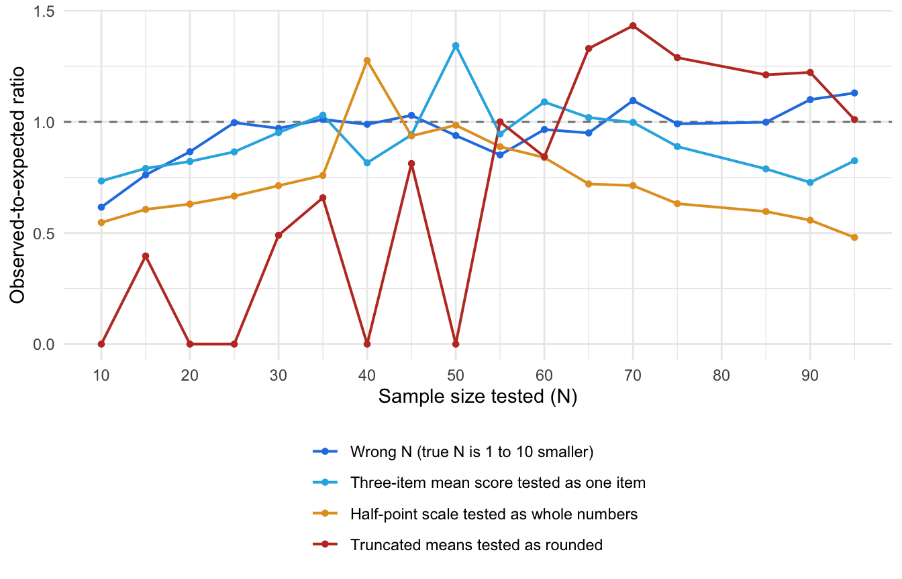
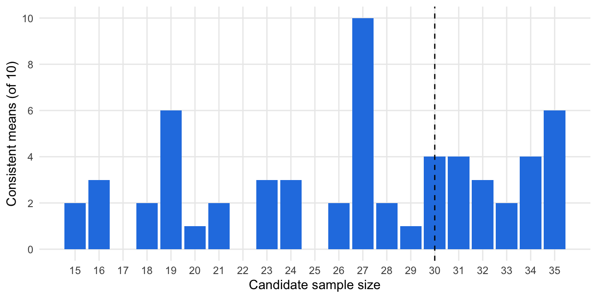

library(tidyverse)
library(scrutiny)
library(strait)
library(analyticgrimu)11 Granularity methods ✎ Draft
Most numbers that psychologists and medical researchers collect are whole numbers. A participant picks 4 on a 1–7 scale, is 23 years old, solves 11 anagrams, or attends 6 sessions. Whole numbers have a property that continuous measurements do not: when you add them up and divide by the sample size, only some results are possible. This chapter covers a family of methods that use this property to check whether reported summary statistics could have come from the data the authors describe. None of them needs the raw data, and the simplest can be done with a pocket calculator.
11.1 The core idea: discrete data produce discrete summary statistics
Consider this fictional extract, which opens the article that introduced the first of these methods (Brown & Heathers, 2017). Participants were randomly assigned to drink water that either did (N = 28) or did not (N = 27) contain Kool-Aid powder, and then answered the question “To what extent do you believe that pigs can fly?” on a scale from 1 to 7. Those who drank the Kool-Aid reported a stronger belief (M = 5.19, SD = 1.34) than those in the control condition (M = 3.86, SD = 1.41).
Nothing here looks unusual, but the first mean is impossible. Each of the 28 participants gave a whole number, so the sum of their responses is a whole number, and the mean is that whole number divided by 28. A mean of 5.19 implies a sum of 5.19 × 28 = 145.32, so the true sum must have been 145 or 146. But 145/28 = 5.1786, which is reported as 5.18, and 146/28 = 5.2143, which is reported as 5.21. No set of 28 whole numbers has a mean that rounds to 5.19.
The property being used is granularity: the smallest amount by which a statistic can change. The mean of N whole numbers can only move in steps of 1/N. With 28 participants the steps are 0.036 wide, which is much wider than the 0.01 steps in which the mean is reported. Most two-decimal values therefore fall into the gaps between the attainable means, and a reported value that sits in a gap cannot be right as described.
Three things make this an unusually clean kind of forensic test.
- It tests possibility, not plausibility. Most methods in this book ask whether a result is surprising. Granularity methods ask whether it can exist. There is no distributional assumption, no significance threshold, and no judgement about what counts as a large effect.
- It needs only what is printed. A mean, a sample size, and knowledge of how the variable was measured are enough.
- Its verdict is narrow. An inconsistency shows that something among the reported mean, the sample size, the description of the measure, or the rounding is not as stated. It does not say which one, and it does not say why. The cause may be a typo, an unreported exclusion, or something worse. Sorting between these is the work of the later sections of this chapter.
11.1.1 Test yourself
Each of these means comes from a single question answered with a whole number. Work out by hand whether the mean is possible.
- M = 3.48, N = 25.
- M = 4.37, N = 17.
- M = 3.12, N = 8.
- M = 3.45, N = 120.
- 3.48 × 25 = 87 exactly, and 87/25 = 3.48. Possible.
- 4.37 × 17 = 74.29. The candidates are 74/17 = 4.353 (reported as 4.35) and 75/17 = 4.412 (reported as 4.41). Impossible.
- 3.12 × 8 = 24.96, so the candidate is 25/8 = 3.125 exactly. Rounding the half upwards gives 3.13, and rounding it down (or to the even digit, as R does) gives 3.12. The verdict depends on the rounding rule, which is the subject of Section 11.6.
- With 120 participants the mean moves in steps of 0.0083, which is finer than the two decimals reported. Every two-decimal value is attainable, so the test cannot fail and tells us nothing.
11.2 The information hierarchy
The methods in this chapter differ in how much reported information they use. Each additional reported quantity makes a harder test available.
| Reported | Test | Question asked | Tells us nothing when |
|---|---|---|---|
| Mean (or percentage) and N | GRIM | Can any set of N whole numbers give this mean? | N × items is 100 or more (at two decimals) |
| Mean, SD, and N | GRIMMER | Can any set of N whole numbers give this mean and this SD? | N × SD is roughly 100 or more (at two decimals) |
| Mean, SD, N, and the range or scale bounds | Bounds methods (next chapter) | Can any set of N whole numbers within these limits give this mean and SD? | The SD is far from both its minimum and maximum |
Two points about the hierarchy matter throughout the chapter.
First, each tier is a strictly harder test than the one above it. A mean that fails GRIM cannot be rescued by its SD, so GRIMMER includes GRIM, and the bounds methods include both. The tests are run in order, and the first failure is the result.
Second, each tier needs more to be reported and more assumptions to hold. GRIM assumes the data are whole numbers and that we know the sample size, the number of items, and the rounding rule. GRIMMER adds the formula used for the SD. Bounds methods add the scale’s minimum and maximum. Each extra assumption is a further way for a correct value to be flagged by mistake, so the ability to detect errors and the risk of false alarms rise together.
A side branch applies the same logic to test statistics instead of descriptive statistics. GRIM-U (Section 11.8) checks the results of Mann-Whitney U tests, which are also built from whole numbers.
11.3 GRIM: mean and sample size
The GRIM test (granularity-related inconsistency of means) was introduced by Brown & Heathers (2017). Its logic takes three steps.
- Multiply the reported mean by the sample size to get the implied sum.
- Take the whole numbers on either side of that sum.
- Divide each by the sample size and round to the reported number of decimals. If neither result matches the reported mean, the mean is inconsistent with the sample size.
Stated formally: a mean reported to d decimals is GRIM-consistent if there is a whole-number sum S such that S / (N × items), rounded to d decimals, equals the reported mean. The number of items is 1 for a single question, and Section 11.5 explains the other cases.
Use the widget below to see why a mean passes or fails. The dots are the means that N whole numbers can produce. The shaded band is the range of exact values that would be reported as the mean you entered. The mean is consistent when a dot falls inside the band.
Try the default values first: 5.19 with N = 28 sits between 145/28 and 146/28. Then raise N towards 100 and watch the dots crowd together until one always lands in the band.
11.3.1 When GRIM can say anything at all
The widget shows the most important practical fact about GRIM. The test can only fail when the attainable means are further apart than the reporting steps, which requires
\[N \times \text{items} < 10^{d}\]
where d is the number of reported decimals. With the usual two decimals, GRIM applies to fewer than 100 participants on a single item. At or above that, every two-decimal value is attainable and every mean passes. Brown and Heathers call variables below this limit GRIM-testable.
The plot below reproduces their Figure 1. Each column is a sample size and each row is one of the 100 possible two-decimal endings of a mean. Blue cells are attainable, and grey cells are impossible. Small samples leave most endings impossible, and the impossible region shrinks to nothing as N approaches 100.
Code
grid <- expand_grid(n = 1:100, ending = 0:99) |>
mutate(consistent = grim(x = ending / 100, n = n, digits_x = 2))
ggplot(grid, aes(n, ending / 100, fill = consistent)) +
geom_raster() +
scale_fill_manual(values = c(`TRUE` = "#2780e3", `FALSE` = "grey90"), guide = "none") +
scale_x_continuous(breaks = seq(0, 100, 10), expand = c(0, 0)) +
scale_y_continuous(breaks = seq(0, 1, 0.1), expand = c(0, 0)) +
labs(x = "Sample size (N)", y = "Decimal part of the reported mean") +
theme_minimal()
Two consequences follow.
Decimals matter as much as sample size. Each extra reported decimal multiplies the reach of the test by ten. A mean reported to three decimals is testable up to N = 999, and one reported to a single decimal only up to N = 9. Supplementary tables, which often report more decimals than the main text, are therefore worth checking.
Record every value exactly as printed. “3.50” has two decimals and “3.5” has one, and GRIM gives different answers for them. Spreadsheets and statistical software drop trailing zeros silently, so the number of decimals has to be recorded when the value is read from the article. It cannot be recovered afterwards from a stored number.
11.3.2 The mathematics of GRIM
This section states the test formally. It can be skipped without losing the thread of the chapter.
11.3.2.1 Without rounding
Let \(x_1, \dots, x_N\) be the scores of \(N\) participants on a single item, each a whole number. Their sum is a whole number,
\[S = \sum_{i=1}^{N} x_i \in \mathbb{Z},\]
and the mean is that sum divided by the sample size,
\[M = \frac{S}{N}.\]
So the exact mean must satisfy
\[N \times M \in \mathbb{Z}.\]
This is the whole of GRIM when the mean is known exactly: multiply the mean by the sample size and check that the result is a whole number. The attainable means form an evenly spaced grid,
\[\mathcal{G}_N = \left\{ \frac{S}{N} : S \in \mathbb{Z} \right\},\]
and the spacing of the grid, \(1/N\), is the granularity of the mean.
For a mean score across \(k\) items, each participant’s score is the mean of \(k\) whole numbers, \(y_i = \frac{1}{k}\sum_{j=1}^{k} x_{ij}\). The sum of all \(N \times k\) responses is a whole number, so
\[M = \frac{S}{N k}, \qquad N k \times M \in \mathbb{Z},\]
and the granularity is \(1/(Nk)\). A \(k\)-item mean score from \(N\) participants has the same grid as a single item from \(Nk\) participants. A sum score across \(k\) items is a whole number for each participant, so it is the single-item case.
The minimum and maximum of the response scale appear nowhere in these expressions. They restrict the range of \(S\), to between \(N k \times \min\) and \(N k \times \max\), but not the spacing of the grid.
11.3.2.2 With rounding
Articles report the mean rounded to \(d\) decimals. Call the reported value \(\tilde{M}\), and let
\[\delta = \frac{1}{2} \times 10^{-d}\]
be half of one reporting step, so \(\delta = 0.005\) at two decimals. The reported value does not identify the exact mean. It identifies an interval \(I(\tilde{M})\) of exact values that would all have been reported as \(\tilde{M}\). Which interval depends on the rounding practice (Section 11.6).
| Rounding practice | Interval of exact means, \(I(\tilde{M})\) |
|---|---|
| Halves rounded up | \([\tilde{M} - \delta,\ \tilde{M} + \delta)\) |
| Halves rounded down | \((\tilde{M} - \delta,\ \tilde{M} + \delta]\) |
| Halves rounded either way (lenient) | \([\tilde{M} - \delta,\ \tilde{M} + \delta]\) |
| Truncation | \([\tilde{M},\ \tilde{M} + 2\delta)\) |
| Stepped rounding through \(d + 1\) decimals, halves up | \([\tilde{M} - 1.1\delta,\ \tilde{M} + 0.9\delta)\) |
The reported mean is GRIM-consistent if at least one attainable mean lies in the interval:
\[\mathcal{G}_{Nk} \cap I(\tilde{M}) \neq \varnothing \quad\Longleftrightarrow\quad \exists\, S \in \mathbb{Z} : \frac{S}{Nk} \in I(\tilde{M}).\]
Multiplying through by \(Nk\) turns this into a question about whole numbers in an interval of sums. Under the lenient rule, the reported mean is consistent if and only if
\[\left\lceil Nk\,(\tilde{M} - \delta) \right\rceil \;\le\; \left\lfloor Nk\,(\tilde{M} + \delta) \right\rfloor,\]
where \(\lceil \cdot \rceil\) rounds up to the next whole number and \(\lfloor \cdot \rfloor\) rounds down. The left side is the smallest whole-number sum that is large enough, and the right side is the largest that is small enough. If the smallest exceeds the largest, no sum fits.
An equivalent form uses the whole number nearest to the implied sum. Writing \(S^{*}\) for \(Nk\,\tilde{M}\) rounded to the nearest whole number, the reported mean is consistent if and only if
\[\left| S^{*} - Nk\,\tilde{M} \right| \;\le\; Nk\,\delta .\]
This is the three-step procedure at the start of this section. For the Kool-Aid example, \(Nk\,\tilde{M} = 28 \times 5.19 = 145.32\), so \(S^{*} = 145\) and the left side is \(0.32\). The right side is \(28 \times 0.005 = 0.14\). Since \(0.32 > 0.14\), the mean is inconsistent.
The strict rules differ from the lenient one only when a sum lands exactly on an end of the interval, that is, when \(S/(Nk)\) has a 5 in decimal place \(d + 1\) and nothing after it. The rule then decides whether that end is included.
11.3.2.3 When the test can fail, and how often
In units of the sum, the interval \(Nk \times I(\tilde{M})\) has width
\[2\,\delta\,Nk = \frac{Nk}{10^{d}}.\]
An interval of width 1 or more that includes at least one of its ends always contains a whole number. So whenever \(Nk \ge 10^{d}\), every reported value is consistent and the test cannot fail. This is the condition \(N \times \text{items} < 10^{d}\) given above.
When \(Nk < 10^{d}\), neighbouring attainable means are more than one reporting step apart, so each rounds to a different reported value. The \(Nk\) attainable means in any unit interval, such as from 3.00 up to 4.00, therefore account for exactly \(Nk\) of the \(10^{d}\) values that can be printed there. Under a strict rounding rule, the share of printable values that are consistent is
\[p = \frac{Nk}{10^{d}},\]
and the share that are inconsistent is \(q = 1 - p\). These are the pass rate and fail rate that Section 11.10 builds on. Under the lenient rule, an attainable mean that falls exactly halfway between two printable values makes both of them consistent, so \(p\) is larger by one printable value for each such tie.
A percentage reported to \(d\) decimals is a proportion reported to \(d + 2\) decimals, with \(k = 1\). Everything above applies with \(d + 2\) in place of \(d\).
11.3.3 GRIM in R
The {scrutiny} package (Jung, 2026) implements GRIM and the other tests in this chapter. A good habit is to type the reported values as text, exactly as printed, and let the software count the decimals from the text.
pigs <- tibble(
condition = c("Kool-Aid", "Control"),
reported = c("5.19", "3.86"),
n = c(28, 27)
) |>
mutate(x = as.numeric(reported),
digits = decimal_places(reported),
consistent = grim(x, n, digits_x = digits))
pigs |>
select(condition, reported, n, digits, consistent)| condition | reported | n | digits | consistent |
|---|---|---|---|---|
| Kool-Aid | 5.19 | 28 | 2 | FALSE |
| Control | 3.86 | 27 | 2 | FALSE |
Both means in the Kool-Aid example are inconsistent. grim() returns TRUE or FALSE for each value it is given:
grim(x = 5.19, n = 28, digits_x = 2)[1] FALSEgrim(x = 5.21, n = 28, digits_x = 2)[1] TRUE
NoteSoftware versions
The code in this chapter uses the development version of {scrutiny}, in which the mean is given as a number and its decimals are stated in digits_x. Older releases instead took the mean as a string (grim(x = "5.19", n = 28)). Both designs exist to stop trailing zeros from being lost. Check which one your installed version expects.
11.4 Percentages and proportions
A percentage is a mean of zeros and ones multiplied by 100, so GRIM applies to it directly. If an article states that 37.5% of 13 participants were women, something is wrong: 4 of 13 is 30.8% and 5 of 13 is 38.5%. A value of 37.5% is what 3 of 8 would give.
grim(x = c(30.8, 37.5, 38.5), n = 13, digits_x = 1, percent = TRUE)[1] TRUE FALSE TRUEGRIM on percentages is often more useful than GRIM on means, for three reasons.
- Percentages are everywhere. Demographics tables report the percentage of women, of each ethnic group, and of each education level. CONSORT flow diagrams report how many participants were allocated, lost, and analysed. Results sections report response rates, completion rates, exclusions, adverse events, and how many participants passed a manipulation check.
- They are rarely checked. Reviewers read demographics tables for content, not arithmetic.
- The test reaches further. A percentage reported to one decimal is a proportion reported to three, so it is testable for samples of up to 999 (Brown & Heathers, 2017). Whole-number percentages are testable below N = 100, like two-decimal means.
11.4.1 The denominator problem
A percentage is always a percentage of something, and articles often leave the something unstated. The percentage of women may be calculated among those who answered the gender question, the percentage with an adverse event among those who received at least one dose, and the percentage completing follow-up among those randomised. A percentage that fails GRIM against the headline N may therefore only show that some participants skipped an item.
This cuts both ways. It is a source of false alarms, but the same logic can be turned around to recover the denominator that was used. Suppose a demographics table for a study with a reported N of 52 gives these five percentages.
demographics <- tibble(
characteristic = c("Female", "University degree", "Employed", "Smoker", "Married"),
reported = c("57.4", "66.0", "40.4", "17.0", "46.8")
) |>
mutate(x = as.numeric(reported))
demographics |>
mutate(consistent_with_52 = grim(x, n = 52, digits_x = 1, percent = TRUE)) |>
select(characteristic, reported, consistent_with_52)| characteristic | reported | consistent_with_52 |
|---|---|---|
| Female | 57.4 | FALSE |
| University degree | 66.0 | FALSE |
| Employed | 40.4 | TRUE |
| Smoker | 17.0 | FALSE |
| Married | 46.8 | FALSE |
Four of the five are impossible for 52 people. Before concluding anything, we can ask which denominators would make all five possible.
tibble(n = 30:60) |>
mutate(n_consistent = map_int(n, \(n) sum(grim(demographics$x, n, digits_x = 1, percent = TRUE)))) |>
filter(n_consistent == max(n_consistent))| n | n_consistent |
|---|---|
| 47 | 5 |
Only one denominator between 30 and 60 reproduces all five percentages: 47. The likely story is that five participants did not complete the demographics questionnaire, or were excluded after the sample size was written down. That is a reporting problem with a specific and checkable fix, and it is a very different finding from “four impossible percentages”. We return to this strategy in Section 11.12.
When an article reports a count together with its percentage, such as “12 (34.3%)”, no granularity logic is needed. The percentage can simply be recalculated (see Chapter 10).
11.5 What counts as whole-number data
GRIM’s central assumption is that each participant contributes a whole number. The practical skill in using it is knowing when that holds, and what the effective sample size is.
Explicit single items. One Likert-type question, one count. The number of response options is irrelevant: it makes no difference whether answers run from 0 to 3 or from 1 to 100 (Brown & Heathers, 2017).
Implicit single-item scales. Many variables are whole numbers without being thought of as scales: age in years, number of children, years of education, number of sessions attended, days in hospital, number of correct trials, cigarettes per day. These are often the best targets in an article, because they appear in baseline tables for every group and nobody expects them to be checked.
Multi-item scales. Here the scoring method decides the granularity.
- A sum score across k items is still a whole number for each participant. The mean of sum scores moves in steps of 1/N, as for a single item.
- A mean score across k items can take any multiple of 1/k for each participant. The mean of mean scores moves in steps of 1/(N × k), so the scale behaves like a single item answered by N × k people. A 10-item scale with 20 participants has the granularity of a single item with 200, and GRIM at two decimals has nothing to say about it.
The item count is therefore an input to the test that has to be extracted from the article, and getting it wrong produces false alarms. Brown and Heathers describe making this mistake themselves: what they took for inconsistent means on a single item turned out to be correctly reported means of a multi-item composite. For subscales, the relevant number is the items in the subscale, not in the full questionnaire. In {scrutiny}, it is given through the items argument.
# impossible for one item answered by 20 people, possible for the mean of a 3-item scale
grim(x = 3.42, n = 20, digits_x = 2, items = 1)[1] FALSEgrim(x = 3.42, n = 20, digits_x = 2, items = 3)[1] TRUEData that look like whole numbers but are not. Age calculated from date of birth, response scales that allow half points, visual analogue scales, reaction times, body mass index, and any score that has been weighted, standardised, transformed, or imputed. A scale with half-point options behaves like a two-item scale (Brown & Heathers, 2017), and can be tested as one. The others cannot be tested.
Statistics that GRIM cannot test at all. Adjusted means, estimated marginal means, and other model-based estimates are not simple averages of the observed scores, even when the scores are whole numbers.
Missing responses within a scale. If some participants skipped some items, the number of responses behind a mean score is smaller than N × k, and the test’s grid is wrong. Brown and Heathers found this caused an inconsistency in only one of the articles they examined, partly because multi-item scales are rarely GRIM-testable in the first place.
Table 11.3 summarises the common cases.
| Measure | Step size of the mean | GRIM at two decimals is uninformative from |
|---|---|---|
| Single item, count, or age in years | 1/N | N = 100 |
| Sum score of k items | 1/N | N = 100 |
| Single item with half-point options | 1/(2N) | N = 50 |
| Mean score of 3 items | 1/(3N) | N = 34 |
| Mean score of 5 items | 1/(5N) | N = 20 |
| Mean score of 10 items | 1/(10N) | N = 10 |
| Percentage reported to one decimal | 100/N | N = 1,000 |
| Percentage reported as a whole number | 100/N | N = 100 |
11.6 Rounding
Question 3 in the quiz above had no single answer: 25/8 = 3.125 is reported as 3.13 by some software and 3.12 by other software. Rounding gets its own section because, once extraction errors are set aside, it is the main way that a correct value can be flagged as impossible.
11.6.1 Rounding conventions
Several conventions are in use for a value that falls exactly halfway between two reportable numbers.
- Round half up (strictly, away from zero): 3.125 becomes 3.13. This is what most people were taught at school, and what SPSS and Excel do.
- Round half to even: 3.125 becomes 3.12 and 3.135 becomes 3.14. This is the default in R and Python.
- Round half down: 3.125 becomes 3.12. Rare as a deliberate choice, but it happens by accident, as described next.
- Floating-point artefacts. Computers store most decimal numbers approximately. A number that looks like an exact half may be stored as very slightly less, and is then rounded down whatever the rule.
round(0.125, 2) # an exact half in binary: rounded to the even digit[1] 0.12round(0.375, 2) # an exact half in binary: rounded to the even digit[1] 0.38round(2.675, 2) # stored as 2.67499999..., so rounded down[1] 2.67Two further practices are not conventions for halves but change the reported value more broadly.
- Truncation: the extra decimals are cut off, so 3.458 is reported as 3.45. A reported 3.45 could then stand for anything from 3.450 up to just under 3.460. This happens when values are copied by hand from output, or when numbers are formatted as text.
- Stepped rounding: a value is rounded once to an intermediate number of decimals and then again. Brown and Heathers found a real case when they obtained the data behind a set of inconsistent SDs: SPSS had displayed 1.2849 at its default three decimals as 1.285, and the authors had then rounded this by hand to 1.29. The correct two-decimal value is 1.28. Stepped rounding can move a value a full unit in the last decimal place, even when the original was not close to a half.
11.6.2 Rounding is an assumption of the test
Authors almost never say how they rounded. They may not know, and different parts of the same article may have been produced by different software. The rounding rule is therefore not a fact about the article that we can look up. It is an assumption that we bring to the test.
The conservative response is to count a value as consistent if any reasonable rounding of halves reproduces it. This is what Brown & Heathers (2017) did, and it is the default in {scrutiny} (rounding = "up_or_down"). The strict alternatives are available for comparison:
grim(x = 3.12, n = 8, digits_x = 2, rounding = "up_or_down")[1] TRUEgrim(x = 3.12, n = 8, digits_x = 2, rounding = "up")[1] FALSEgrim(x = 3.12, n = 8, digits_x = 2, rounding = "even")[1] TRUETruncation can be allowed for in the same spirit, by also accepting any sum whose mean would be cut down to the reported value. Stepped rounding is harder. {scrutiny} does not accommodate it, and neither does any other GRIM implementation we know of. It should be kept in mind as a possible innocent explanation for a failure, particularly when the reported value is one unit above an attainable one. It is also an undisclosed and incorrect practice, so “the authors rounded twice” is still a finding about the article’s reporting, if a minor one.
11.6.3 The cost of leniency
Every rounding practice that the test accommodates widens the band of exact values that count as a match, so more wrong values pass. The trade-off is unavoidable: a lenient test raises fewer false alarms and misses more errors.
To see its size, we need a GRIM function in which the rounding rules can be combined freely. The function below is a plain implementation of the three steps in Section 11.3, and it returns the same verdicts as {scrutiny} for the “up” and “up or down” rules. We use it for the simulations in the rest of the chapter.
# round the exact values v to d decimals under one rule, returned as whole numbers of the last decimal place
round_rule <- function(v, d, rule) {
z <- v * 10^d
switch(rule,
up = floor(z + 0.5 + 1e-9), # halves go up
down = ceiling(z - 0.5 - 1e-9), # halves go down
trunc = floor(z + 1e-9)) # extra decimals are cut off
}
# is the reported mean x attainable from n * items whole numbers under any of the rules?
grim_base <- function(x, n, d, items = 1, rules = c("up", "down")) {
target <- round(x * 10^d)
nm <- n * items
nearest_sum <- floor(x * nm + 1e-9)
consistent <- rep(FALSE, length(target))
for (k in -1:2) { # the whole-number sums around the implied sum
for (rule in rules) {
consistent <- consistent | (round_rule((nearest_sum + k) / nm, d, rule) == target)
}
}
consistent
}
# the share of all values printable at d decimals that would pass
pass_rate <- function(n, d, items = 1, rules = c("up", "down")) {
mean(grim_base((0:(10^d - 1)) / 10^d, n, d, items, rules))
}The pass rate is the share of all printable values that the test would accept for a given design. A pass rate of 0.30 means that 30% of two-decimal values are attainable, so a wrong value picked at random has a 30% chance of slipping through. Section 11.10 develops this idea. Here we use it to compare three versions of the test.
Code
rounding_rules <- list(
"Halves up only" = "up",
"Halves up or down" = c("up", "down"),
"Halves up or down, or truncation" = c("up", "down", "trunc")
)
rounding_pass <- expand_grid(n = 1:110, rule = names(rounding_rules)) |>
mutate(pass = map2_dbl(n, rule, \(n, rule) pass_rate(n, d = 2, rules = rounding_rules[[rule]])),
rule = fct_inorder(rule))
ggplot(rounding_pass, aes(n, pass, colour = rule)) +
geom_line(linewidth = 0.7) +
scale_colour_manual(values = c("#2780e3", "#e39f27", "#c0392b")) +
scale_x_continuous(breaks = seq(0, 110, 10)) +
scale_y_continuous(labels = scales::percent) +
labs(x = "Sample size (N)", y = "Values that pass", colour = "Accommodated") +
theme_minimal() +
theme(legend.position = "bottom", legend.direction = "vertical")
Under the strict rule the pass rate is exactly N/100. Allowing halves to go either way makes no difference at most sample sizes, because exact halves only arise when the sample size is a multiple of 8. Where they do arise the effect can be large: at N = 40 the pass rate is 60% instead of 40%, and at N = 80 every value passes, so the lenient test already stops being informative there. Allowing truncation as well costs more, and at almost every sample size: the pass rate climbs about one and a half times as fast, and from about N = 67 nothing can fail. The exceptions are sample sizes that divide evenly into 100, such as 20, 25, and 50, where means have no further decimals to cut off.
The practical advice is to run the lenient test as the main analysis, because a false accusation of impossibility is the costlier error, and to report how the verdicts change under stricter rules. A value that only passes because a half was rounded down, in an article whose other values were rounded up, deserves a note.
The rounding of reported values also matters when they are used as inputs to other calculations, such as recomputing a p-value from rounded means and SDs. That is covered in Chapter 10.
11.7 GRIMMER: adding the SD
When an article reports the SD alongside the mean, a second tier of the hierarchy opens up. GRIMMER asks whether any set of N whole numbers could produce the reported mean and the reported SD together. The test was introduced by Anaya (2016), who found the patterns that attainable variances follow by simulation. Allard (2018) then showed that the same test can be derived with simple algebra. The implementation in {scrutiny} follows the analytic version.
11.7.1 The logic
The SD is calculated from the sum of the squared scores. Rearranging the usual formula for the sample SD gives
\[\sum x^2 = (N - 1) \times SD^2 + \frac{\left(\sum x\right)^2}{N}\]
The left-hand side is a sum of squared whole numbers, so it must itself be a whole number. It must also be odd when the sum of the scores is odd, and even when the sum is even, because squaring a whole number never changes whether it is odd or even. GRIMMER applies these two facts.
- Run GRIM. If the mean is impossible, stop. Otherwise GRIM has identified the sum of the scores.
- The reported SD stands for a small range of exact values, because it was rounded. Use the formula to turn that range into a range for the sum of squares.
- Check whether the range contains a whole number, and whether that whole number is odd or even as required.
Take a mean of 3.50 from 10 participants, so that the sum is 35, an odd number. For a reported SD of 1.20, the exact SD lies between 1.195 and 1.205, and the sum of squares between 9 × 1.195² + 122.5 = 135.35 and 9 × 1.205² + 122.5 = 135.57. No whole number lies in that range, so the SD is impossible. For a reported SD of 1.22, the range is 135.79 to 136.01. It contains 136, but 136 is even and the sum is odd, so this SD is impossible too. A reported SD of 1.18 gives a range of 134.93 to 135.14, which contains 135, an odd number. That SD is possible.
grimmer(x = 3.50, sd = c(1.20, 1.22, 1.18), n = 10, digits_x = 2, digits_sd = 2)[1] FALSE FALSE TRUEThe Kool-Aid example reported SD = 1.34 for the 28 participants whose mean was 5.19. That mean already fails GRIM. If the mean had been reported as the attainable 5.21, would the SD be possible?
grimmer(x = 5.21, sd = 1.34, n = 28, digits_x = 2, digits_sd = 2)[1] TRUEIt would.
11.7.2 How much does GRIMMER add?
GRIMMER catches impossible SDs when the mean is fine, which GRIM cannot do. How often it does so depends on something GRIM is indifferent to: the size of the SD. The range in step 2 gets wider as the SD gets larger, and a wider range is more likely to contain a suitable whole number. Anaya (2016) noted that the test is most powerful when the SD is small.
The simulation below measures this. The left panel looks at GRIMMER’s own contribution: the mean is correct, so the sum is known, and we ask what share of two-decimal SD values near a given magnitude would pass. The right panel shows the two tests together: the share of random pairs of a mean and an SD that pass both.
Code
# the SD check, given a known whole-number sum S (sample SD, halves rounded either way)
grimmer_given_sum <- function(S, sd, n, d_sd = 2) {
half <- 0.5 * 10^-d_sd
lower <- (n - 1) * pmax(sd - half, 0)^2 + S^2 / n
upper <- (n - 1) * (sd + half)^2 + S^2 / n
candidate <- ceiling(lower - 1e-9)
candidate <- candidate + ((candidate - S) %% 2) # move to the next whole number that is odd or even like S
candidate <= upper + 1e-9
}
# all whole-number sums that are consistent with a reported mean
sums_for_mean <- function(x, n, d = 2) {
half <- 0.5 * 10^-d
lower <- ceiling((x - half) * n - 1e-9)
upper <- floor((x + half) * n + 1e-9)
if (lower > upper) integer(0) else lower:upper
}
# GRIM and GRIMMER together
grimmer_base <- function(x, sd, n) {
S <- sums_for_mean(x, n)
length(S) > 0 && any(grimmer_given_sum(S, sd, n))
}
set.seed(42)
sd_band <- function(mid) round(seq(mid - 0.25, mid + 0.24, by = 0.01), 2)
sample_sizes <- c(seq(5, 100, 5), seq(120, 400, 20))
sd_alone <- expand_grid(n = sample_sizes, sd_mid = c(0.5, 1, 2, 3)) |>
mutate(pass = map2_dbl(n, sd_mid, \(n, sd_mid) {
sums <- sample(n:(7 * n), 200, replace = TRUE) # possible sums on a 1-7 scale
mean(outer(sums, sd_band(sd_mid), \(S, sd) grimmer_given_sum(S, sd, n)))
}),
panel = "SD check alone (mean is correct)")
both <- expand_grid(n = sample_sizes, sd_mid = c(0.5, 1, 2, 3)) |>
mutate(pass = map2_dbl(n, sd_mid, \(n, sd_mid) {
pairs <- expand_grid(x = 3 + (0:99) / 100, sd = sd_band(sd_mid))
mean(map2_lgl(pairs$x, pairs$sd, \(x, sd) grimmer_base(x, sd, n)))
}),
panel = "GRIM and GRIMMER together (random mean and SD)")
grim_alone <- tibble(n = 1:400) |>
mutate(pass = map_dbl(n, \(n) pass_rate(n, d = 2)),
panel = "GRIM and GRIMMER together (random mean and SD)")
bind_rows(sd_alone, both) |>
mutate(panel = fct_inorder(panel)) |>
ggplot(aes(n, pass)) +
geom_line(data = grim_alone |> mutate(panel = factor(panel, levels = c("SD check alone (mean is correct)", panel[1]))),
linetype = "dashed", colour = "grey50") +
geom_line(aes(colour = factor(sd_mid)), linewidth = 0.7) +
facet_wrap(vars(panel)) +
scale_colour_manual(values = c("#2780e3", "#27b3e3", "#e39f27", "#c0392b")) +
scale_y_continuous(labels = scales::percent) +
labs(x = "Sample size (N)", y = "Values that pass", colour = "Size of the SD") +
theme_minimal() +
theme(legend.position = "bottom")
The left panel has a simple reading. For two-decimal reporting, the share of SD values that pass is close to N × SD / 100. With an SD near 1, the SD check is about as demanding as GRIM is for the mean. With an SD near 0.5, it is twice as demanding and still rejects some values at N = 300, well past the point where GRIM gives up. With an SD near 2 or 3, it passes everything from about N = 55 or N = 35.
The right panel shows what this means for the pair. For small samples the two checks multiply: at N = 30 and an SD near 1, about 30% of means pass GRIM but under 10% of mean and SD pairs pass both. GRIMMER is therefore a much sharper test than GRIM for small samples, and the only one of the two that can still fail above N = 100, provided the SD is small. Small SDs on whole-number data are common where responses pile up at one end of a scale, which is also where the bounds methods of the next chapter are most useful.
11.7.3 Limits and assumptions
GRIMMER is necessary, not sufficient. A mean and SD can pass GRIMMER and still be unattainable once the scale’s minimum and maximum are taken into account. A mean of 6.9 on a 1–7 scale cannot go with an SD of 2, whatever the arithmetic of odd and even sums says. Closing that gap is the purpose of the bounds methods in the next chapter, of the reconstruction methods SPRITE and CLOSURE in the chapter after it, and of the BRIMMEST method in the {strait} package (Hussey, 2026b), which settles exactly whether any set of whole numbers within the scale’s limits produces the reported values.
The SD formula is a further assumption. GRIMMER as implemented in {scrutiny} assumes the sample SD, which divides by N − 1. An SD calculated with the population formula, dividing by N, is smaller by a factor of √((N − 1)/N), which is about 2.5% at N = 20. That is enough to change the second decimal, so a correct population SD will often fail the test. {scrutiny} has no option to test against the population formula.
scores <- c(1, 2, 2, 3, 5)
sd(scores) # sample SD: 1.52[1] 1.516575sqrt(mean((scores - mean(scores))^2)) # population SD: 1.36[1] 1.356466grimmer(x = 2.6, sd = c(1.52, 1.36), n = 5, digits_x = 1, digits_sd = 2)[1] TRUE FALSEHow often this matters is not well documented. R, SPSS, Stata, and SAS all report the sample SD by default, so the population formula is probably uncommon in psychology and medicine. It is the default in Python’s NumPy library and is one click away in Excel (STDEV.P), so it is more likely wherever descriptive statistics were produced in a spreadsheet or in Python. If an article’s SDs fail GRIMMER wholesale, it is worth multiplying the reported SDs by √(N/(N − 1)) and testing again before concluding anything.
Other measures of spread. Variances can be tested by taking their square root, and standard errors of the mean by multiplying by √N. In both cases the rounding of the reported value has to be carried through the conversion, because a standard error rounded to two decimals corresponds to a much wider range of SDs.
11.7.4 DEBIT: a related check for binary data
Articles sometimes report the mean and SD of a variable coded 0 or 1, such as a gender or group-membership dummy in a table of descriptive statistics. For binary data the SD carries no information beyond the mean: it is fixed at √(N/(N − 1) × M × (1 − M)). The DEBIT test (Heathers & Brown, 2019) checks whether a reported pair respects this.
# 35% of 60 participants coded 1: the SD must be 0.48
debit(x = 0.35, sd = c(0.48, 0.41), n = 60, digits_x = 2, digits_sd = 2)[1] TRUE FALSEStrictly, DEBIT is not a granularity test. It does not ask which values a discrete statistic can take. It asks whether two reported numbers that are tied together by a formula agree, which makes it a close relative of the recalculation checks in Chapter 10. It is described here because it is used on the same tables as GRIM and GRIMMER, and because a binary mean is also a proportion, so GRIM (Section 11.4) applies to it as well.
11.8 Beyond descriptive statistics: GRIM-U
The principle behind GRIM is not specific to means. Any statistic that is calculated from a finite number of discrete outcomes can take only a finite set of values. Means were the first application.
GRIM-U (Heathers & Grimes, 2025) applies the principle to the Mann-Whitney U test. The test ranks all the observations from two groups and counts, for every pair made of one observation from each group, which group’s member ranks higher. The U statistic is that count. With group sizes n1 and n2:
- U must lie between 0 and n1 × n2.
- U must be a whole number, or end in .5 if some observations are tied.
- Each attainable U corresponds to a specific p-value, so the attainable p-values form a discrete set too.
With two groups of five and no ties, only seven two-sided p-values below .25 can occur at all.
grimu_map_pvalues(n1 = 5, n2 = 5, ties = "none") |>
filter(is_integer, U <= 6) |>
mutate(p = round(p_exact, 3)) |>
select(U, p)| U | p |
|---|---|
| 0 | 0.008 |
| 1 | 0.016 |
| 2 | 0.032 |
| 3 | 0.056 |
| 4 | 0.095 |
| 5 | 0.151 |
| 6 | 0.222 |
A reported p = .04 from this design would be impossible under the exact test, because the attainable values jump from .032 to .056.
Rank tests are a good target because they are used where samples are small and data are not normal: animal studies, pilot trials, and small clinical samples. These are the conditions under which granularity is coarse and the test can fail.
11.8.1 Three checks
The {analyticgrimu} package (Hussey, 2026a) implements GRIM-U in an analytic form that does not need to enumerate every possible ranking. Its main function makes three comparisons.
- Sample sizes and U. Is the reported U between 0 and n1 × n2, and a whole or half number?
- Sample sizes and p. Could any U from this design give the reported p-value?
- U and p. Could the specific reported U give the specific reported p-value?
result <- grimu_check(n1 = 10, n2 = 12, u_reported = 30, p_reported = 0.200, digits = 3)
result$summary |>
select(u_bounds_consistent, u_granularity_consistent, p_granularity_consistent, u_matches_p, consistent) |>
pivot_longer(everything(), names_to = "check", values_to = "passed")| check | passed |
|---|---|
| u_bounds_consistent | TRUE |
| u_granularity_consistent | TRUE |
| p_granularity_consistent | TRUE |
| u_matches_p | FALSE |
| consistent | FALSE |
Here the U statistic is attainable and so is the p-value, but not together. A U of 30 with these group sizes gives a p-value of about .05, and no pattern of ties can raise it to .20.
A common cause of a failure on the first check is innocent. Some software reports the rank sum W under the name U, and W can exceed n1 × n2. The package checks for this.
check_u_consistency(n1 = 10, n2 = 12, u_reported = 130) |>
select(u_possible, u_looks_like_w, w_implied_u)| u_possible | u_looks_like_w | w_implied_u |
|---|---|---|
| FALSE | TRUE | 75 |
11.8.2 Additional assumptions
GRIM-U needs more assumptions than GRIM, because a Mann-Whitney p-value can be calculated in several ways. Software may use the exact distribution or a normal approximation, with or without a continuity correction, and with or without a correction for ties. Exact p-values are also defined in more than one way. Sidedness matters too. {analyticgrimu} treats these as GRIM treats rounding: a reported result passes if any modelled convention reproduces it.
Ties are the largest source of leniency. Ties shrink the variance of U, so the same U can give a range of p-values depending on how heavily tied the data were. The package computes that range exactly and accepts anything inside it, so a correctly reported result from tied data is never flagged. The price is that the default test is weak. Checking a p-value on its own will almost never flag anything, and detection is one-sided: a p-value that is too large for its U can be caught, but one that is too small can always be explained by supposing more ties.
Two features recover some of the lost ground. If the measure is known to be continuous, or to have a known number of scale points, this can be stated, and the accepted range narrows. The share of three-decimal p-values that are attainable for two groups of six falls from 94% when any ties are allowed to 7% when there are none.
grimu_saturation(n1 = 6, n2 = 6, decimals = 3)[1] 0.9380619grimu_saturation(n1 = 6, n2 = 6, decimals = 3, ties = "none")[1] 0.06993007These options are safe in one direction only. If the data were more tied than was assumed, correct results will be flagged, so it is better to err towards allowing ties. The function also reports the minimum amount of tying that a consistent explanation would require. A result that is only possible if half the sample shares one value is unremarkable for a single five-point item and not credible for a reaction time.
One coverage gap remains. Some software computes an exact permutation p-value conditional on the observed pattern of ties, which cannot be reconstructed from the group sizes. A failure against a result produced that way may reflect the gap and not an error.
11.9 Assumptions, false positives, and false negatives
The previous sections introduced the assumptions of granularity tests one at a time. Table 11.4 collects them. A false positive is a correctly reported value that the test flags as impossible. A false negative is an incorrect value that the test passes.
| Assumption | If it is wrong | Guard against it by |
|---|---|---|
| The N behind this statistic is the one we used | False positives. Cell sizes assumed equal when they are not, N before exclusions used in place of N analysed, item-level missing data | Looking for cell sizes in tables, degrees of freedom, and flow diagrams. Searching for an N that makes all values consistent (Section 11.12) |
| The number of items is right | False positives if a mean score is tested as a single item. False negatives if a sum score is tested as a mean score | Reading the measures section for how the scale was scored |
| The data are whole numbers | False positives | Checking the response format, and whether the statistic is a raw mean or a model estimate |
| The rounding practice is one we allowed for | False positives | Using the lenient rule, and considering truncation and stepped rounding before reporting a failure |
| The value was extracted correctly | False positives. Dropped trailing zeros, values read from the wrong column, PDF conversion faults, the assessor’s own typos | Re-reading every flagged value in the original article |
| The SD uses the sample formula (GRIMMER) | False positives | Re-testing with converted SDs |
False negatives have a different set of causes, most of which cannot be fixed.
- The test cannot fail. When N × items is 100 or more at two decimals, GRIM passes everything.
- Chance. A wrong value can land on an attainable one. For a wrong value picked at random, the probability is the pass rate, covered in the next section.
- Leniency. Every accommodated rounding practice lets more wrong values through.
- Errors the test is blind to by design. GRIM only sees the last decimals of a value. A mean of 3.50 that should have been 5.30 passes if both are attainable. A fabricated dataset produces attainable means automatically, because the fabricator’s numbers are whole numbers too. Only summary statistics that were made up or altered directly, without data behind them, are exposed.
- Gaming. An author who knows about GRIM can defeat it by reporting one decimal, or by not reporting cell sizes. The chapter on validating forensic methods returns to this under adversarial robustness.
The asymmetry between the two outcomes is the main thing to take from this section. A failure is strong evidence that something is misreported, provided the checks in Table 11.4 have been made, and no evidence about what or why. A pass is weak evidence of anything. Brown and Heathers make the same point: the number of GRIM failures in an article is a conservative estimate of the number of errors.
Before reporting any failure:
- Re-extract the value from the original article, with its trailing zeros.
- Try the other sample sizes the article gives for that analysis.
- Check how the scale was scored and how many items it has.
- Try the stricter and more lenient rounding rules, and consider truncation.
11.10 Pass rates: how often would a random number pass?
The rest of the chapter depends on one quantity. Suppose a reported value had nothing to do with any data, and was drawn at random from all the values that can be printed with d decimals. What is the probability that it passes GRIM?
This is the pass rate introduced in Section 11.6, and the fail rate is one minus the pass rate. Three properties make it useful.
- It is a property of the design: the sample size, the number of items, the number of decimals, and the rounding rule. It does not depend on the reported value. It can be computed before looking at any results.
- The fail rate is the test’s power against a random wrong value. A value with a fail rate of 0.72 is one where a wrong number would be caught 72% of the time. A value with a fail rate of zero cannot be caught at all.
- It defines which values are informative. Only values with a fail rate above zero can tell us anything, whether they pass or fail.
Brown and Heathers give the approximation: with two decimals and N below 100, a random value is consistent in about N% of cases. More generally the pass rate is close to N × items / 10d, up to a maximum of 1. It is not exactly that under the lenient rounding rule, as Figure 11.2 showed: sample sizes that produce exact halves have higher pass rates.
Code
pass_grid <- expand_grid(d = 1:3, items = c(1, 5, 10)) |>
mutate(n = map2(d, items, \(d, items) 1:ceiling(1.15 * 10^d / items))) |>
unnest(n) |>
mutate(pass = pmap_dbl(list(n, d, items), \(n, d, items) pass_rate(n, d, items)),
approximation = pmin(1, n * items / 10^d),
d_label = paste(d, ifelse(d == 1, "decimal", "decimals")),
items_label = fct_inorder(paste(items, ifelse(items == 1, "item", "items"))))
ggplot(pass_grid, aes(n, pass)) +
geom_line(aes(y = approximation), linetype = "dashed", colour = "grey50") +
geom_line(colour = "#2780e3", linewidth = 0.6) +
facet_wrap(vars(d_label, items_label), scales = "free_x", labeller = label_wrap_gen(multi_line = FALSE)) +
scale_x_continuous(breaks = \(limits) unique(round(pretty(limits, n = 4)))) +
scale_y_continuous(labels = scales::percent) +
labs(x = "Sample size (N)", y = "Values that pass") +
theme_minimal() +
theme(panel.spacing.x = unit(1.5, "lines"))
Every panel has the same shape, because only the product N × items matters. The panels differ in where the line reaches 100%: at N = 10 for a single item reported to one decimal, and at N = 1,000 for a single item reported to three. A five-item mean score at two decimals is exhausted by N = 20, and a ten-item mean score at one decimal cannot be tested at any sample size.
The same idea carries over to the other tests. For percentages, the pass rate is about N / 10d+2. For GRIMMER, Figure 11.3 showed the joint pass rate for a random mean and SD, which is far lower than for GRIM alone in small samples. {scrutiny} reports the fail rate under the strict rule as the probability column of grim_map(), and grim_probability() returns it directly.
11.10.1 Is a random number the right comparison?
The pass rate assumes that a wrong value is equally likely to be any printable value. Real wrong values are not like that. A typo usually changes one digit. A value copied from the wrong row is another real mean. People who invent numbers favour some final digits and avoid others. The uniform assumption is best treated as a reference point, not a model of how errors arise, and conclusions that depend on it should be checked against other reference distributions. The grim_sensitivity() function in {strait} does this for digit preferences.
11.10.2 Use in practice
Compute the pass rates before testing a table. If they are all 1, no value in the table can fail, and there is nothing to report either way: “all means were GRIM-consistent” would be true and empty. If they are low, the table is worth the effort, and a clean result means something.
Brown and Heathers give an example of how pass rates combine. With N = 75, a single random mean passes 75% of the time, but six random means all pass only 0.756 = 18% of the time. A set of values is a much stronger test than any one of them, which leads to the question of how to summarise a set.
11.11 Aggregating across multiple tests
A typical article yields many granularity tests. Suppose it gives twenty, and three fail. What can be said about the article?
A count or percentage of failures is not interpretable without knowing how many of the twenty could have failed. Three failures among twenty values from samples of 95 would be remarkable. Three among twenty values from samples of 15 would be far fewer than made-up numbers would produce. The summary has to take the pass rates into account.
There are several ways to do this, and they differ in what they assume. A useful discipline is to arrange them as an assumption ladder: a sequence of quantities, each reported together with the assumptions it needs, ordered from none to many. Readers can then stop at whichever rung they are willing to defend.
| Rung | Quantity | Assumptions added at this rung |
|---|---|---|
| 0 | The result for each value: pass or fail | None |
| 1 | The pass rate and fail rate for each value | None |
| 2 | The number of informative values, k, and the number of failures among them, F | None |
| 3 | A bound on the share of values that are not genuine: at least F/k | Correct values never fail |
| 4 | The number of failures expected if every value were random, E | A random value is equally likely to be any printable value |
| 5 | The observed-to-expected ratio, F/E | None further |
| 6 | The probability of seeing this few, or this many, failures if every value were random | Values pass or fail independently |
| 7 | An estimate of the share of values that are not genuine, with an interval | Each value is independently either correct or random |
| 8 | A comparison with the failure rate of a reference set of trusted articles | A calibrated reference set exists |
The grim_aggregate() function in {strait} computes the ladder. Here it is applied to eight means from one hypothetical article.
article <- tibble(
x = c("5.19", "3.86", "4.50", "2.33", "6.02", "3.71", "4.10", "5.55"),
n = c( 28, 27, 20, 45, 45, 31, 60, 120)
)
ladder <- grim_aggregate(article)
ladder$data |>
select(reported = x, n, consistency, p_pass, q_fail = q, informative)| reported | n | consistency | p_pass | q_fail | informative |
|---|---|---|---|---|---|
| 5.19 | 28 | FALSE | 0.28 | 0.72 | TRUE |
| 3.86 | 27 | FALSE | 0.27 | 0.73 | TRUE |
| 4.50 | 20 | TRUE | 0.20 | 0.80 | TRUE |
| 2.33 | 45 | TRUE | 0.45 | 0.55 | TRUE |
| 6.02 | 45 | TRUE | 0.45 | 0.55 | TRUE |
| 3.71 | 31 | TRUE | 0.31 | 0.69 | TRUE |
| 4.10 | 60 | TRUE | 0.60 | 0.40 | TRUE |
| 5.55 | 120 | TRUE | 1.00 | 0.00 | FALSE |
ladderGRIM aggregation (rounding = up_or_down, counterfactual = uniform)
0 n_values 8 none values GRIM-tested
1 mean_q 0.555 none mean fail rate q over tested values
2 n_uninformative 1 none values that cannot fail (q = 0); excluded
n_flagged_impossible 0 none failures with q = 0: extraction errors; excluded
k 7 none informative values
F 2 none GRIM failures among informative values
3 theta [0.286,1.00] A0 share of informative values that are non-genuine
4 E 4.44 A0, U failures expected if every value were random
5 O_E 0.450 A0, U 0 none; <1 fewer than random; 1 as random; >1 misfit
6 var_F 1.51 A0, U, I variance of F if every value were random
p_fewer_than_random 0.0588 A0, U, I P(F' <= F): evidence against all-random
p_more_than_random 0.991 A0, U, I P(F' >= F): misfit of the random model
7 lambda_moment 0.450 A0, U, I, M non-genuine rate, moment estimate (unbounded)
lambda_mle 0.468 A0, U, I, M non-genuine rate, MLE on [0, 1]
8 lambda_support_8 [0.0817,1.00] A0, U, I, M 1/8 likelihood support interval
lambda_support_32 [0.0382,1.00] A0, U, I, M 1/32 likelihood support interval
Note: lambda is a process parameter; prefer steps 0-6 as the headline for a single paper.In the output, A0 stands for “correct values never fail”, U for the uniform reference distribution, I for independence, and M for the mixture model at rung 7. Reading up the ladder:
Rungs 0 to 2 need no assumptions. Eight values were tested. One of them, from the sample of 120, cannot fail and is set aside, which leaves seven informative values. Two of those failed.
Rung 3 assumes only that the test was set up correctly. If correct values never fail, both failures are values that are not genuine, in the broad sense of not being the mean of the data described. So at least 2 of 7 informative values, or 29%, are not genuine. The upper limit is 100% and always will be, because any value that passed could be a wrong value that passed by luck. This is a statement of what the results rule out, and it involves no probability.
Rungs 4 and 5 add the random reference. If all seven values were random, we would expect 4.44 of them to fail. This number is worth reporting in its own right, because it says how much the set could have told us. We observed 2, giving an observed-to-expected ratio of 0.45. The ratio needs no assumption about independence, because expected values add up whether or not the tests are related. It is not capped at 1. With a small E it moves in large steps, so E should always be reported next to it.
Rung 6 adds independence. If each value passes or fails independently, the number of failures among random values follows a known distribution (the Poisson-binomial, which is a binomial with a different probability for each trial). The probability of seeing 2 or fewer failures among seven random values is .06. So this set is not clearly distinguishable from made-up numbers on GRIM alone, even though five of seven values passed. That is a useful corrective to reading “71% passed” as reassuring. The opposite tail, the probability of seeing this many failures or more, is a check on the reference model and is discussed in the next section.
Independence is the assumption most likely to be false. Values that share a wrong sample size, or were copied from one another, or were derived from one another, pass and fail together.
Rungs 7 and 8 are for research on many articles. Rung 7 treats each value as coming from a mixture of correct and random values and estimates the mixing proportion. Rung 8 compares the failures with the rate found in a trusted reference set, which allows for the fact that correct values do sometimes fail in practice, through extraction errors and unreported exclusions. Both are suited to pooled analyses across a literature. They are not recommended as the headline for a single article, where the estimate rests on a handful of values and the model’s assumptions carry most of the weight.
Two things should not be done with these results. Failures from GRIM, GRIMMER, and percentage tests should not be added together as if they were independent, because GRIMMER includes GRIM and a wrong N affects all of them. And a count of failures should never be converted into a p-value for fabrication. The reference model at rung 6 describes random numbers, and rejecting or failing to reject it says nothing direct about how the values in the article came to be.
11.12 Failing at the random level: diagnosing the cause
The observed-to-expected ratio does more than summarise. Where it falls says something about why values are failing.
| Pattern | Observed-to-expected ratio | Most likely reading |
|---|---|---|
| No failures | 0 | Consistent as reported, or uninformative: check E |
| A few failures | Well below 1 | Mostly correct values with isolated errors, such as typos |
| Failing like random numbers | About 1 | The values have no relationship to the tested grid: one of the test’s inputs is wrong for every value |
| Failing more than random numbers | Well above 1 | Rare. Check the test’s inputs and the extraction before anything else |
11.12.1 Failing at the random level
The third row is the most useful. Suppose the means in a table were calculated on 27 participants, but the article reports N = 30 and we test against 30. The means are perfectly good means. They sit on the grid of values attainable with 27 people. But that grid has no particular relationship to the grid for 30 people, so each mean lands on an attainable value for 30 about as often as a random number would. A table with the wrong N fails GRIM at roughly the random rate.
The simulation below checks this, and compares it with other ways in which the test’s inputs can be wrong for every value in a table: a three-item mean score tested as a single item, a response scale with half points tested as whole numbers, and means that the authors truncated when the test assumed rounding. For each, it generates correct means from random responses on a 1–7 scale and tests them with the wrong input.
Code
set.seed(42)
round_half_up <- function(v, d = 2) floor(v * 10^d + 0.5 + 1e-9) / 10^d
truncate_to <- function(v, d = 2) floor(v * 10^d + 1e-9) / 10^d
# sample means from n people answering `items` questions on a 1-7 scale with the given step
simulate_means <- function(n, reps, items = 1, step = 1) {
responses <- sample(seq(1, 7, by = step), n * items * reps, replace = TRUE)
rowMeans(matrix(responses, nrow = reps))
}
reps <- 4000
misspecified <- tibble(n = seq(10, 95, 5)) |>
mutate(q = map_dbl(n, \(n) 1 - pass_rate(n, d = 2))) |>
filter(q > 0) |>
mutate(
`Wrong N (true N is 1 to 10 smaller)` = map_dbl(n, \(n) mean(map_dbl(1:min(10, n - 2), \(drop)
mean(!grim_base(round_half_up(simulate_means(n - drop, reps / 10)), n, 2))))),
`Three-item mean score tested as one item` = map_dbl(n, \(n)
mean(!grim_base(round_half_up(simulate_means(n, reps, items = 3)), n, 2))),
`Half-point scale tested as whole numbers` = map_dbl(n, \(n)
mean(!grim_base(round_half_up(simulate_means(n, reps, step = 0.5)), n, 2))),
`Truncated means tested as rounded` = map_dbl(n, \(n)
mean(!grim_base(truncate_to(simulate_means(n, reps)), n, 2)))
) |>
pivot_longer(-c(n, q), names_to = "cause", values_to = "fail_rate") |>
mutate(ratio = fail_rate / q, cause = fct_inorder(cause))
ggplot(misspecified, aes(n, ratio, colour = cause)) +
geom_hline(yintercept = 1, linetype = "dashed", colour = "grey50") +
geom_line(linewidth = 0.7) +
geom_point(size = 1.2) +
scale_colour_manual(values = c("#2780e3", "#27b3e3", "#e39f27", "#c0392b")) +
scale_x_continuous(breaks = seq(10, 90, 10)) +
labs(x = "Sample size tested (N)", y = "Observed-to-expected ratio", colour = NULL) +
theme_minimal() +
theme(legend.position = "bottom", legend.direction = "vertical")
A wrong sample size produces a ratio close to 1 from about N = 25 upwards. It is somewhat lower in smaller samples, where the true and the tested sample size more often share factors. Individual pairs of true and tested N vary more than the average shown here, between about 0.8 and 1.2 in most cases. An ignored item count behaves similarly, with more variation. The other two causes are less regular. A half-point scale mostly fails below the random rate, because half of its means sit on the whole-number grid anyway. Truncation depends heavily on the sample size: it causes no failures at all where means have no further decimals to cut off, and more failures than random numbers at sample sizes between 65 and 90.
No cause produced ratios far above 1. The highest values were about 1.3 to 1.4, at particular sample sizes. This is not an accident. A random number is already unrelated to the grid, and it is hard for values to be systematically worse than unrelated. Values manage it only where they fall into the gaps of the grid more often than chance, as truncated means do at some sample sizes. The practical reading of a ratio well above 1 is therefore narrow. With few values, it is probably noise: eight failures out of eight gives a ratio of 1.43 when the fail rate is 0.70, and that happens to random numbers about 6% of the time. With many values, it points to a specific mechanical cause, and the test’s inputs and the extraction should be checked before anything is said about the article.
The useful contrast is between the second and third rows of Table 11.6. Isolated errors produce a few failures, well below the random rate. A systematic cause makes the whole table fail like random numbers.
11.12.2 Finding the sample size that was used
A wrong N is the most common systematic cause, and it has a signature that the others lack: there is some other N at which everything passes. This turns the diagnosis into a search, as with the denominators in Section 11.4.
Suppose an article reports that 30 participants per condition took part, and gives these ten means of single items for one condition.
set.seed(123)
table_means <- tibble(
# ten means calculated on 27 participants, responses skewed towards the middle of a 1-7 scale
x = replicate(10, mean(sample(1:7, 27, replace = TRUE, prob = c(1, 2, 3, 4, 3, 2, 1)))) |>
round_half_up() |>
sprintf(fmt = "%.2f"),
n = 30
)
grim_aggregate(table_means)$summary |>
filter(quantity %in% c("k", "F", "E", "O_E", "p_more_than_random")) |>
select(quantity, value, interpretation)| quantity | value | interpretation |
|---|---|---|
| k | 10.00 | informative values |
| F | 6.00 | GRIM failures among informative values |
| E | 7.00 | failures expected if every value were random |
| O_E | 0.86 | 0 none; <1 fewer than random; 1 as random; >1 misfit |
| p_more_than_random | 0.85 | P(F’ >= F): misfit of the random model |
Six of the ten means fail against N = 30, where seven failures would be expected from random numbers. The table fails at about the random rate. That pattern suggests a systematic cause, so we test every nearby sample size.
n_search <- tibble(candidate_n = 15:35) |>
mutate(n_consistent = map_int(candidate_n, \(n) sum(grim(as.numeric(table_means$x), n, digits_x = 2))),
# probability that ten random values would all pass at this N
p_all_pass_if_random = map_dbl(candidate_n, \(n) pass_rate(n, d = 2)^10))
ggplot(n_search, aes(candidate_n, n_consistent)) +
geom_col(fill = "#2780e3") +
geom_vline(xintercept = 30, linetype = "dashed") +
scale_x_continuous(breaks = 15:35) +
scale_y_continuous(breaks = seq(0, 10, 2)) +
labs(x = "Candidate sample size", y = "Consistent means (of 10)") +
theme_minimal() +
theme(panel.grid.minor = element_blank())
n_search |>
filter(n_consistent == max(n_consistent)) |>
mutate(p_all_pass_if_random = format(p_all_pass_if_random, digits = 2, scientific = TRUE))| candidate_n | n_consistent | p_all_pass_if_random |
|---|---|---|
| 27 | 10 | 2.1e-06 |
All ten means are consistent with N = 27, and with no other sample size in the range. The conclusion changes from “many impossible means” to “the means were calculated on 27 participants, not the 30 reported”. The classic version of this is an article that reports the number of participants recruited or randomised, while the means come from those who remained after attrition or exclusions.
Three cautions apply.
- Guard against overfitting. With only two or three values, some sample size will make them all pass by chance. The last column above is the guard: it gives the probability that ten random values would all pass at the candidate N, which here is tiny. With few values that probability is not small, and the search proves little.
- Shared factors hide wrong sample sizes. If the true N divides the reported one, or shares a large factor with it, the grids overlap. Means calculated on 10 participants all pass against 20.
- Cross-check the candidate against the article. A recovered N is a hypothesis. Degrees of freedom, the flow diagram, and the percentages in the demographics table can confirm it or rule it out.
This diagnosis matters because of what Brown and Heathers found when they obtained the data behind inconsistent articles (Section 11.13). In five of the nine datasets, the explanation involved a sample size that differed from the one reported: cells whose size did not match the column heading, cases missing from a repeated-measures analysis, exclusions that were not subtracted from the reported count, and a sample size that was simply stated incorrectly.
11.12.3 Below the random level but above zero
The second row of Table 11.6 is the usual pattern in real articles, and the hardest to explain from the numbers alone. A few failures scattered among many passes cannot be attributed to one cause. Each has to be checked individually against the article, and what remains is a list of specific values to ask the authors about.
These are patterns over sets of values. One or two informative values cannot distinguish between them, and should be reported as individual inconsistencies without a diagnosis.
11.13 What large-scale applications have found
36 of 71
GRIM-testable psychology articles contained at least one mean that was inconsistent with its reported sample size (Brown & Heathers, 2017).
The only systematic application of GRIM to a sample of the literature that we know of is in the article that introduced it. Brown & Heathers (2017) searched the 2011–2015 issues of Psychological Science, the Journal of Experimental Psychology: General, and the Journal of Personality and Social Psychology for articles containing the word “Likert”, and examined 260 of them. Of these, 189 (73%) had no GRIM-testable data, mostly because their samples were too large. In the remaining 71:
- 35 (49%) reported all testable means consistently.
- 15 (21%) had one or two inconsistencies that looked like typographical errors.
- 5 (7%) had a small number of inconsistencies that might affect the main results.
- 16 (23%) had a larger number of inconsistencies, often at several points in the article. In some of these, more than half of the testable values were inconsistent.
The authors requested the data for the 21 articles in the last two categories. They obtained data from eight authors, and a ninth provided enough information to check the means. Five authors refused, four promised data that did not arrive, and the rest could not be reached or did not reply. In all nine cases that could be checked, GRIM had identified at least one real problem, and three articles needed formal corrections.
The causes they found are instructive, because none of them is fraud and most are mundane: sample sizes that differed from those reported (in five of the nine cases), a spreadsheet formula that included the wrong cells, values copied incorrectly, the stepped rounding of SDs described in Section 11.6, and, in one case, an analysis error serious enough for the authors to issue a correction once they noticed it while preparing the data. In one case, Brown and Heathers had themselves made an error by overlooking that a measure was a multi-item composite.
Granularity tests also became known through case studies. GRIM and GRIMMER were among the tools used in the reanalysis of four articles from the Cornell Food and Brand Lab (Zee et al., 2017), and Heathers & Grimes (2025) demonstrate GRIM-U on four published medical studies.
11.13.1 Reading these figures with the chapter’s tools
The headline figure needs the same care as any other prevalence estimate.
- “At least one failure” depends on how many values were tested. An article with forty informative values has many more chances to contain one failure than an article with four. The assumption ladder exists to deal with this, and the study predates it.
- Testable articles are a selected subset. Only 27% of the articles examined could be tested: those with small samples, whole-number measures, and two-decimal reporting. Brown and Heathers note that small studies may be more error-prone than large ones, so the rate may not generalise to the rest of the literature.
- Failures are a lower bound on errors. A wrong value passes with a probability equal to the pass rate, so the articles with no failures are not thereby shown to be error-free.
- The assessors make errors too. The authors’ own mistake over a composite measure shows that false positives occur even when the method’s developers apply it by hand.
- Follow-up was possible for a minority. Data were obtained for 9 of 21 articles. The confirmed rate of real problems, nine out of nine, applies to authors who were willing to share.
With these caveats, the finding stands as one of the more striking in the meta-science literature: about half of the testable articles in three leading journals contained at least one mean that could not be right as reported.
11.14 Where to look
GRIM’s reach is set by the product of sample size and items against the number of decimals. That makes the useful targets predictable, both within an article and across literatures.
11.14.1 Within an article
- Demographics and baseline tables. Age in years, counts of sessions or children, and percentages for every categorical variable. In a randomised trial these appear once per arm.
- Per-cell means in small experiments. A factorial experiment with 160 participants in eight cells has 20 per cell. The total N is not GRIM-testable, and every cell mean is.
- Single-item measures. Manipulation checks, single-item mood or attitude ratings, and behavioural counts.
- Subgroup and moderator analyses, where the sample shrinks.
- Flow diagrams and attrition percentages.
- Supplementary tables, which often give more decimals than the main text.
11.14.2 Across literatures
Higher yield. Laboratory experiments in social and cognitive psychology with small cells. Pilot and feasibility trials. Animal studies, where groups of fewer than 15 are common and rank tests are widely used. Small intervention studies in clinical psychology, nursing, education, and sports science.
Lower yield. Large surveys. Multi-item scale means from samples of more than about 20. Anything reported to one decimal. Model-based estimates.
Reporting conventions change which test is useful. Medical journals tend to report means to one decimal, which makes GRIM on means nearly useless there, but they report counts with percentages for almost everything, which shifts the useful test to percentages. Psychology journals following APA style report two decimals, which is why GRIM was developed there.
A triage rule follows from Section 11.10. Compute the pass rates first, and spend time only on values whose fail rate is above zero.
11.15 Interpreting and reporting results
Use the test’s own language. A value is “inconsistent with the reported sample size, assuming a single whole-number item and conventional rounding”. It is not “fabricated”, “fraudulent”, or “wrong” without qualification. The test establishes that the reported numbers cannot all be true together. It does not establish which is false, or why.
For each test, report:
- the value exactly as printed, and where in the article it appears;
- the sample size and number of items used, and where they came from;
- the number of decimals and the rounding rule assumed;
- the pass rate for that design;
- the software and its version.
For a set of tests, report the assumption ladder as far as the rung you are willing to defend. For a single article that will usually be rungs 0 to 6: the number of informative values, the number of failures, the expected number under the random reference, their ratio, and the tail probability with a note on independence.
Rule out explanations in order, from the most charitable.
- The assessor’s extraction error.
- A typographical error in the article.
- Unreported missing data or exclusions, so that the N used differs from the N reported.
- A wrong assumption about the number of items or the scoring.
- Truncation or stepped rounding.
- An error in calculation.
- Only then, anything worse.
Contact the authors when an informative set of values fails in a way that the first five explanations do not resolve, or when the failures affect the article’s main results. Ask for what would settle the matter: the cell sizes, the number of items and how the scale was scored, and the sample size behind each analysis. Asking for the data is reasonable when those answers do not resolve it. Brown and Heathers report that simply making this kind of check improved their understanding of the methods in the articles they read, whether or not it found anything.
Software. {scrutiny} for GRIM, GRIMMER, and DEBIT. {strait} for aggregation, and for the bounds methods of the next chapter. {analyticgrimu} for GRIM-U. The chapters in Part IV describe what it means for such tools to be validated, and how far each of these has been.